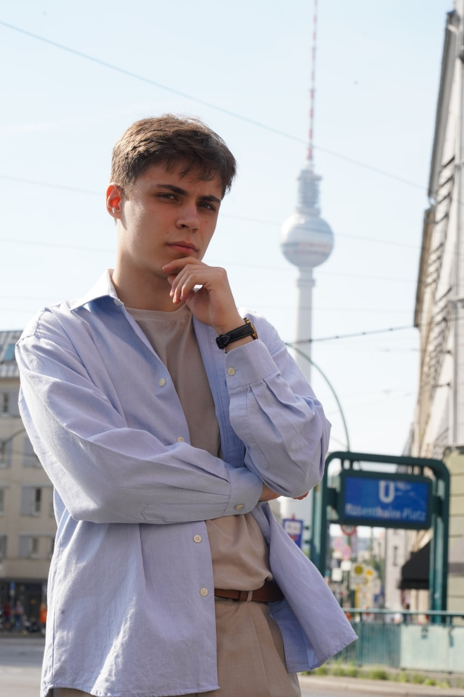
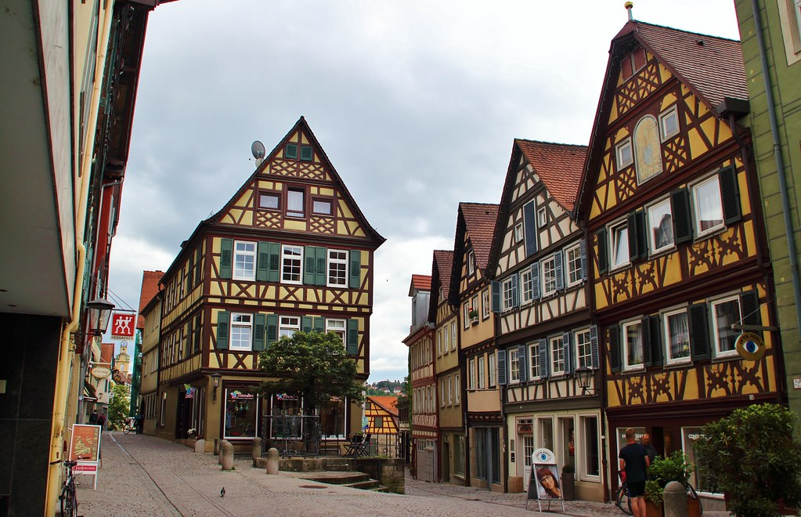
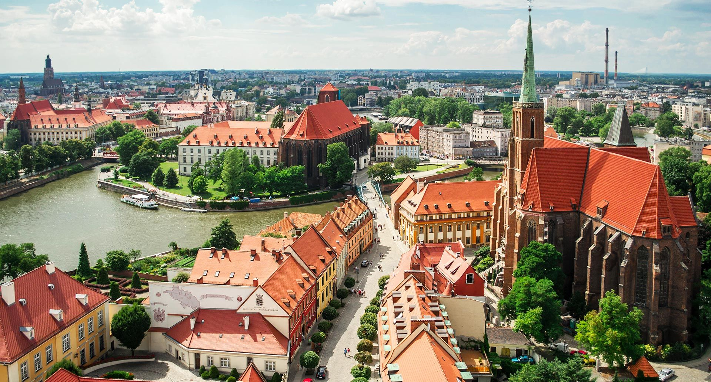

Самотос Миайло
Про мене
Привіт! Я Михайло, інтерн дизайнер та дизайнер на конструкт-платформах. Також цікавлюсь і розвиваюсь в таких напрямах як UI/UX, брендинг та веб девелопмент.
Щиро ціную і поважаю в людях наступні риси:
- Дружелюбність
- Правдивість, щирість, чесність (але не коли цим відмазують агресію)
- Врівноваженість
- Оптимізм
- І просто людську приємну простоту та компанійність!
Мої контакти
TELEGRAM
INSTAGRAM
Моє фото

Міста де я проводжу багато часу:
Швебіш-Гааль

Вроцлав
